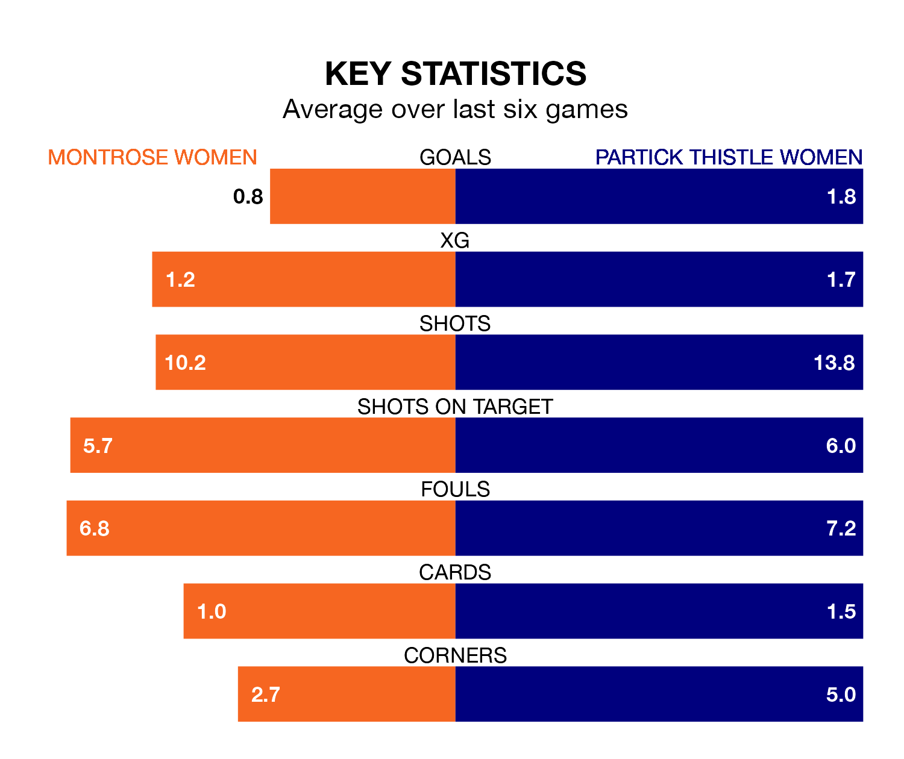

Partick Thistle Women travel to Montrose Women on early Sunday in SWPL 1.
The visitors come into the game on the back of a win in their last match, having beaten Aberdeen 2-0 at home, with goals from Linzi Taylor and Rosie Slater.
Montrose, meanwhile, lost their last match, 9-0 against Celtic Women.
Montrose are 10th in the table after 17 games, of which they have won two and drawn four, earning 10 points.
Partick Thistle are four places ahead of the hosts in sixth, with 10 wins and seven losses putting them on 30 points.
With 15 goals in 17 games so far this season, Montrose are the league's joint-third-lowest scorers with 0.9 goals per game. And they are conceding more than average, letting in 72 goals at a rate of 4.2 per game.
Thistle are also below average scorers, with 1.8 goals per game, compared to a league average of 2.2. They have conceded 1.6 goals per game.
Montrose are in disappointing form in SWPL 1, with one win and two draws from their last six games.
With four wins and two losses over that period, the away side's form is much better – they have taken 12 points from 18, compared to the home team's five.
Over the last two years, Montrose and Partick Thistle have played each other twice. Partick Thistle won both of them.
Their last meeting was on November 12, when Partick Thistle won 2-1 at home.
Updated: 09:18 (UTC), 23/01/24